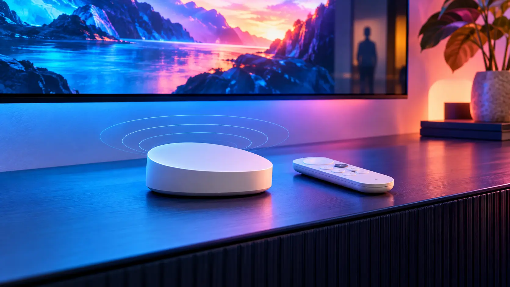

Smart home · Field note 026
Google’s next TV Streamer may listen—and notice when you walk in
A reported hardware refresh adds built-in microphones, presence sensing, a faster processor, more storage, and two extra remote shortcuts.

Google’s next streaming box could turn the quiet space beneath the television into an ambient smart-home sensor.
Google is developing a new generation of its TV Streamer, according to 9to5Google. The reported device keeps the current model’s slanted, pill-shaped design but trims its width for a smaller footprint.
The more consequential change is a set of microphones built into the box itself. That would let viewers use hands-free “Hey Google” commands without first reaching for the remote or relying on a separate smart speaker.
From media box to room-aware display
Presence sensing is also reportedly part of the hardware. Google has already shown how that capability can make a television less passive: a compatible TCL set can start a Google Photos screen saver when someone enters the room, then surface ambient information such as the time and weather as a person approaches.
Putting the sensor in Google’s own streamer could bring that behavior to more televisions. It would also move the product closer to a smart-home hub—one that can respond to the room before anyone presses a button.
Inside, a faster processor and more storage than the present model’s 32GB are expected. The remote is said to keep its general shape while adding two shortcuts beside the existing YouTube and Netflix keys. The Find My Remote button remains on the back of the streamer.
The unanswered questions matter
There is no reported launch date, price, processor name, or final storage capacity. Those details will determine whether the refresh is merely more convenient or a meaningful performance upgrade.
The privacy controls will matter too. An always-available microphone and presence sensor can make a television feel effortless, but Google will need to make their state visible and give households simple hardware and software controls. Until the company announces the product, the device remains a report rather than a promise.